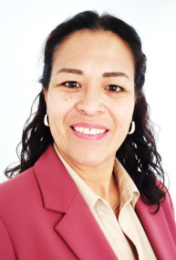
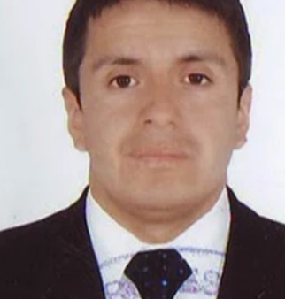
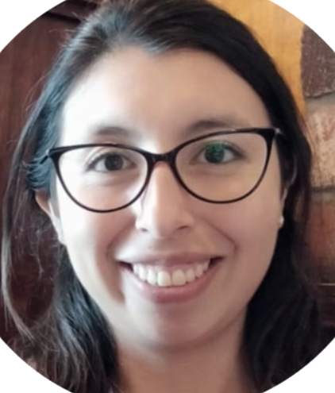
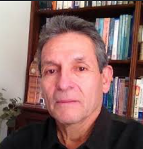
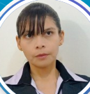

Antony Jose Huanca Juarez
DESCRIPCION PERSONAL
Soy Antony Jose Huanca Juarez actuamente haciendo los estudios mis estudios superiores en la universidad Catolica San Pablo en Arequipa, cursando la carrera de Ciencias de la computacion, tengo una bases solidas en el tema de programacion, siendo esto uno de mis actividades favoritas, actualmente soy catequista de primera comunion del colegio de la Salle incluso de tener contrato en el club de handball del colegio, gracias a esto pude tener buenas habildades blandas, logre viajar a China por tema de intercambio, demostrando que me tomo con seriedad y cumplo con todo lo que me propongo .Mi sueño es lograr trabajar con inteligencia artificial en grandes empresas
DESCRIPCION DE CURSOS
En mis cursos que estoy llevando en primer semestre dentro de mi carrera, tengo IVU un curso el cual me introduce informacion sobre las universidades. Logica un curso el cual te ayuda a pensar y llegar a un buen juicio como ser,Comunicacion el cual introduce ortografia como la tildacion,morfologia,sintaxis. Fundamentos matematicos para la computacion el cual me presenta temas el cual son la base detras del funcionamiento de la programacion. Fundamentos de la programacion introduce temas basicos dentro de python el cual son ideales para una base solida dentro de la programacion. Introduccion de la computacion un curso bastante relevante paara carreras que incluso no estan dentro de ambito de la computacion, aunque para mi no me interesa mucho el tema de cursos de humanidades o de letras, al fin al cabo no es estudiar nomas los temas que tu quieres si no los temas que tu necesitas
DESCRIPCION DE PROFESORES
Cada curso se tiene un docente el cual se especializo en el tema, siendo que cada docente tiene su forma de enseñar algo mas didactico o algo mas teorico por ejemplo en introduccion a la computacion, introduce una enseña tanto teorica como didactica a comparacion de logica el cual es una enseñanza mas teorico
PROFESORES


Loayza Cruz Krsitel Giselle


